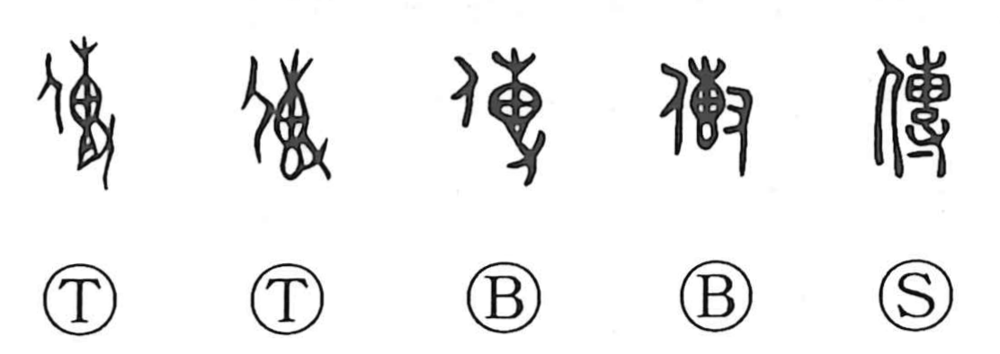

伝

Kun: tsutawaru, tsutaeru, tsutau | On: den
to transmit ・ to convey ・ to hand down ・ to send ・ to spread ・ biography
Explanation
Shirakawa traces this character to the older form 傳, composed of the person element and 專. In 專 he sees an object packed into a bag and pounded by a hand until it becomes a compact, rounded bundle. When set beside the person, the graph depicts someone bearing that bundle on the back, giving the sense of carrying something to another person. From this concrete image arise the meanings to convey and teach, to hand down to later generations, to send on, and to spread, which also underlie its use for a biography.